December 2025
A room of strangers, an introduction to iGEM, and no project. Everyone went away to write a pitch of their own.
-
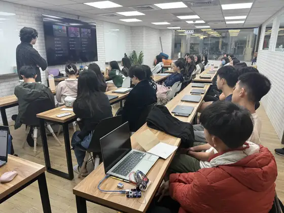
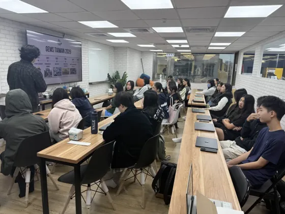
The first meeting. Nobody knew anybody yet. -
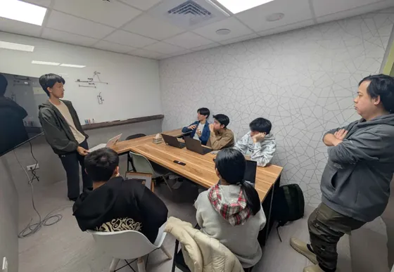
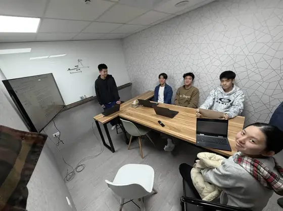
Pitching our own project ideas to the advisors.
January and February 2026
Five candidate projects went down to two, then to one: protecting plants from stress. The first roadmap split the work into four tracks, all pointing at a field test.
-
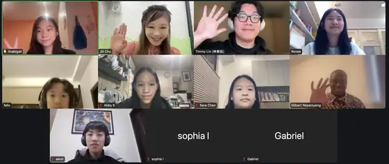
Our first outreach meeting, with Ubuntu Social Enterprise, held online. -
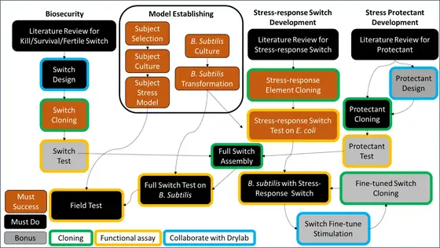
The first roadmap: four tracks, and a field test at the end of all of them.
March 2026
Everyone sat through lab safety training. Then we went to Professor Cheng Mei-Chun’s lab at NTU and came home with Arabidopsis seeds.
-
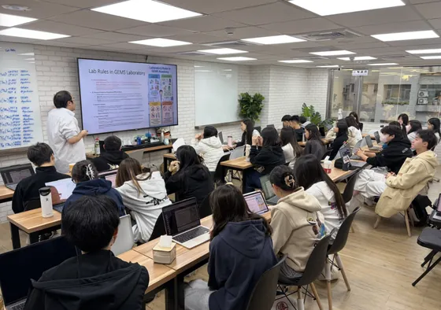
Lab safety class, before anyone was allowed to touch anything. -
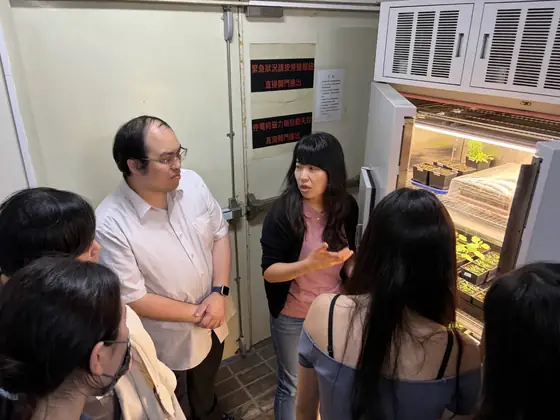
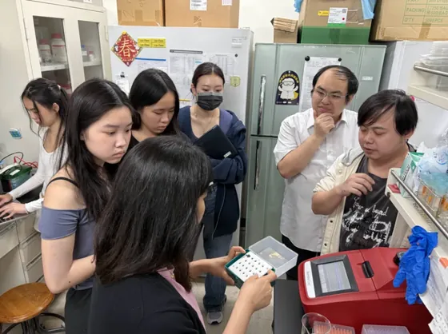
At Professor Cheng’s lab at NTU, learning the plant protocols and taking seeds home.
April 2026
April changed the project. After talking to Dr. Verslues and Professor Chen Wen-Liang we dropped the earlier design for a light-controlled bioreactor, with a hollow-fibre membrane keeping the bacteria in and letting the protectant out.
-
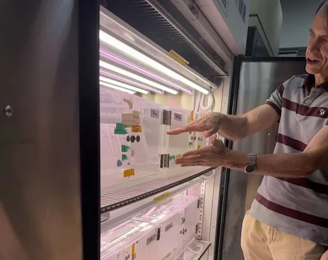
Visiting Dr. Paul Verslues at Academia Sinica. -
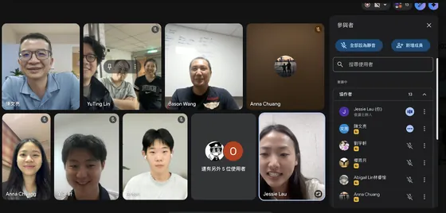
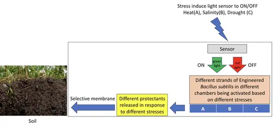
Professor Chen Wen-Liang online, on hardware and on the business case. The first bioreactor sketches came out of that call. -
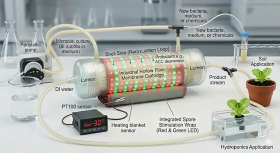
Working out what the hollow-fibre cartridge would have to look like. -
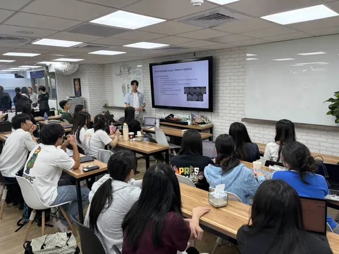
An advisor explaining Arabidopsis to the rest of us.
May 2026
We grew Arabidopsis on agar, in hydroponics and in soil to see which we could run stress assays on. The hardware team started breadboarding a photometer and a light plate because we could not buy either.
-
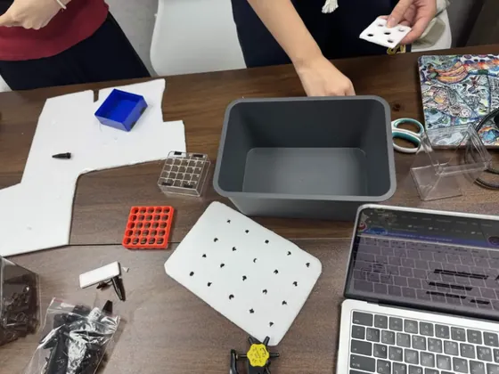
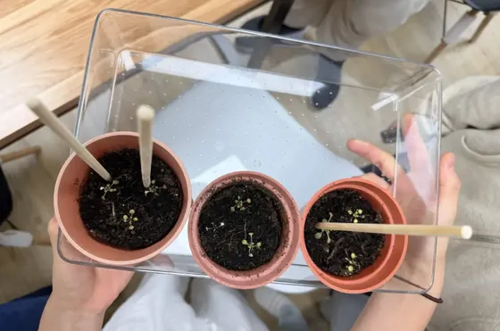
A hydroponics box in parts, and the first seedlings going into soil. -
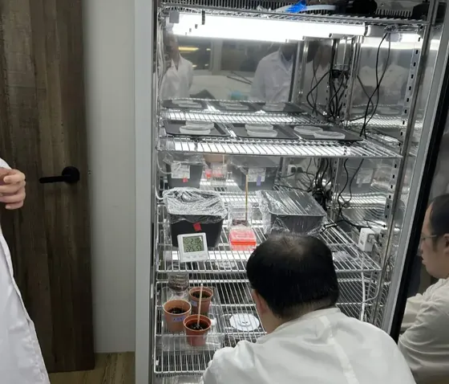
All three methods in one incubator: agar plates, hydroponic boxes and pots. -
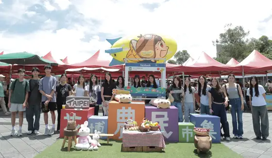
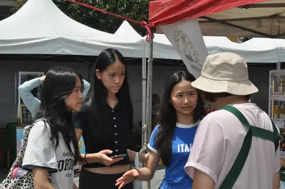
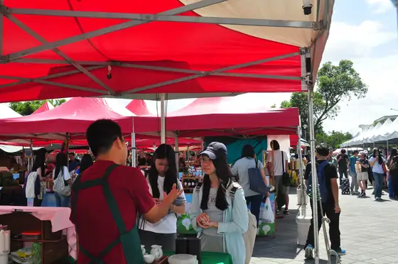
Our first farmers’ expo, asking growers what stress actually costs them. -
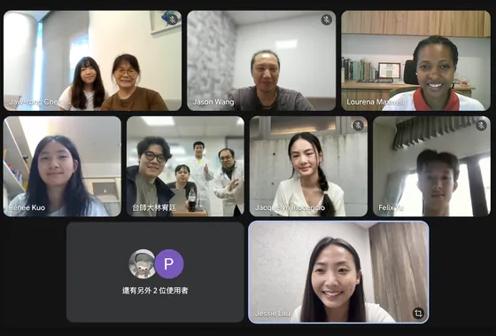
The World Vegetable Center, on who our product is really for. -
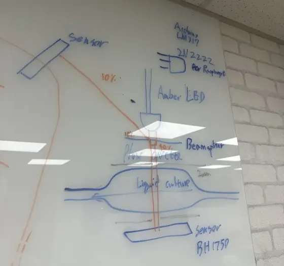
Sketching a spectrophotometer we could build ourselves. -
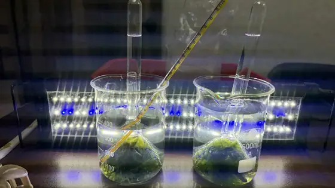
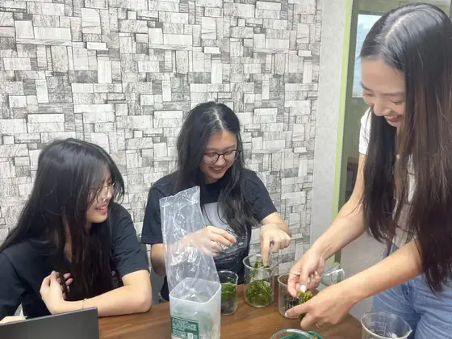
Testing the school activities on ourselves first.
June 2026
The first growth test in the hollow-fibre loop worked: the culture stayed where it was meant to. Plenty else did not. Professor Chang and Professor Chen came to pick the design apart, and we ran our first workshops in three primary schools.
-
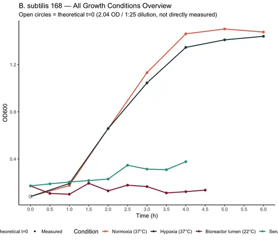
The first B. subtilis growth test in the hollow-fibre loop, with flask cultures alongside it. -
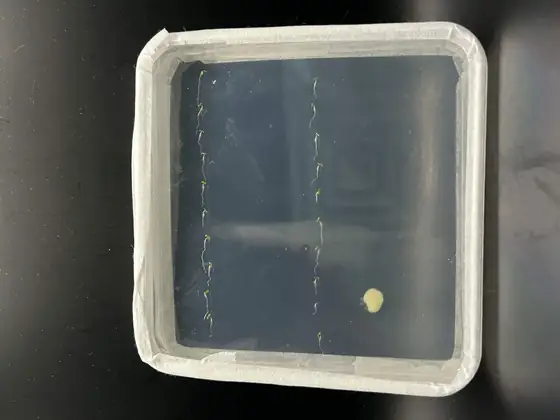
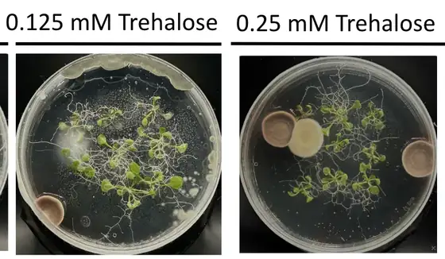
Not every week is a good week: seedling plates set up the wrong way round, and a contaminated run. -
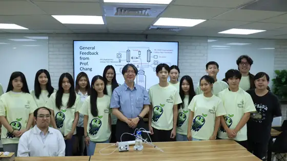
Professor Chang Jo-Shu on the bioreactor, and on our B. subtilis problems. -
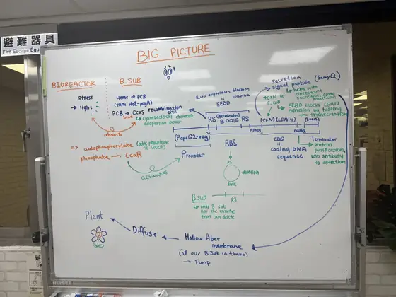
The whole system on one board for the first time: reactor, bug, construct, secretion, membrane, soil, plant. -
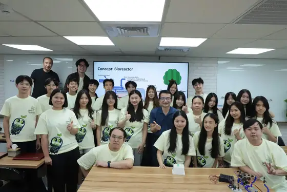
Professor Chen Wen-Liang went through the lot: model, plants, protectant, hydroponics, circuit, reactor. -
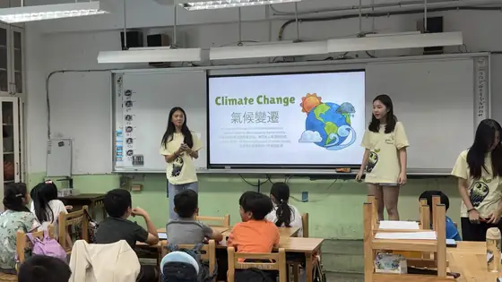
Our first education events, at three primary schools.
July 2026
The light plate went together, the pressure sensor started reporting, and the inline photometer read a live culture in the loop, about four times too high. That reading gave August its job. Outside the lab we spent a day on Ms Chen’s farm and a day at BIO Asia.
-
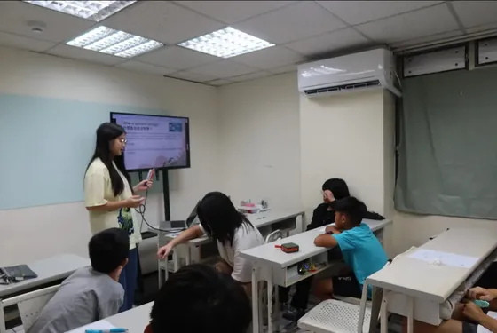
Our first junior high school event. -
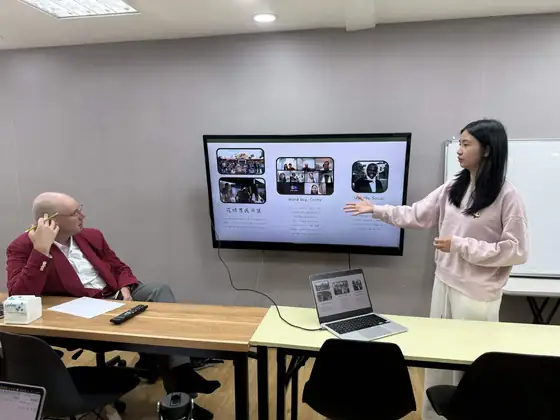
Dr. Daniel Viragh of the Berkeley Historical GIS Project, and a way to map Taiwan’s farmland. -
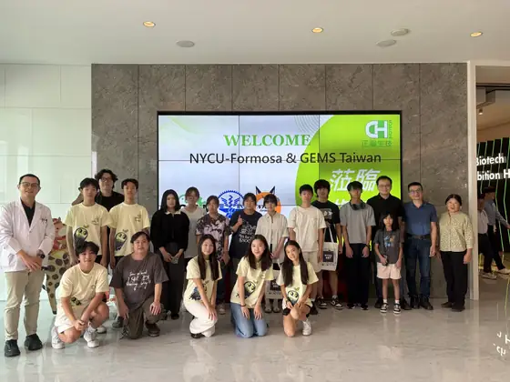
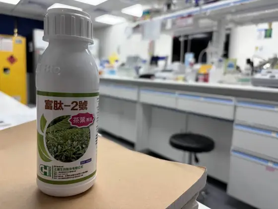
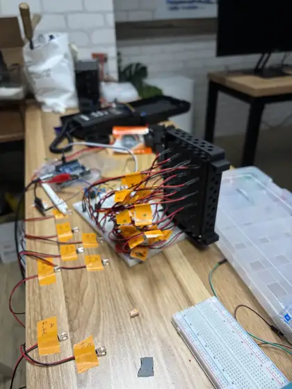
At CH Biotech, and back in the lab with one of their protectants to measure ourselves against. Then an evening sorting LEDs by brightness. -
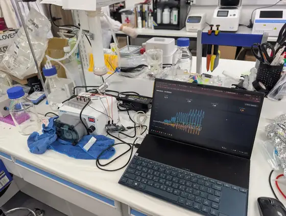
The pressure sensor sending live readings to a laptop for the first time. -
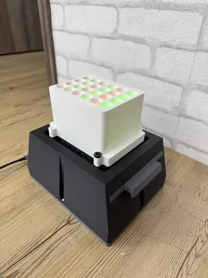
The light plate apparatus, assembled, every LED matched. -
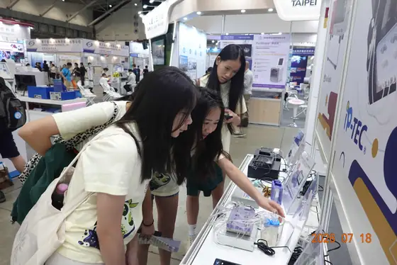
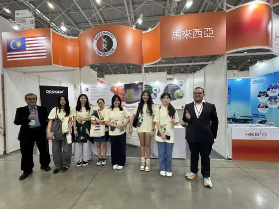
BIO Asia-Taiwan, for a look at what the industry is doing. -
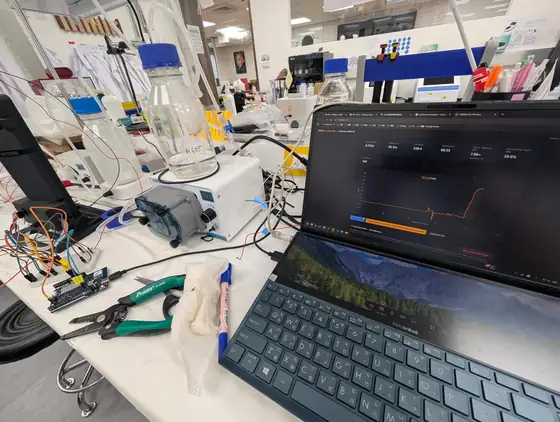
Our photometer read a live culture in the loop. Against the Biodrop it read four times too high. -
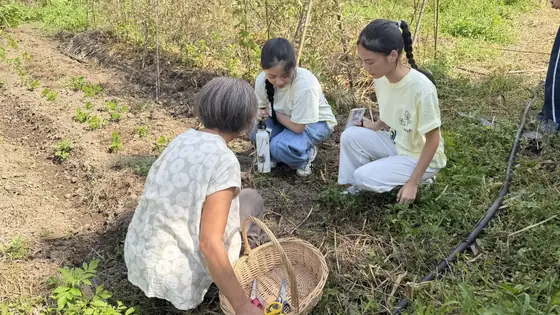
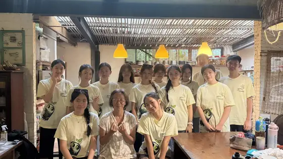
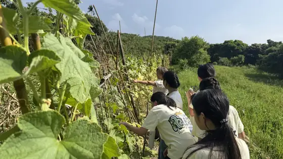
A day on Ms Chen Hui-Wen’s natural farm. Yes, we picked cucumbers. -
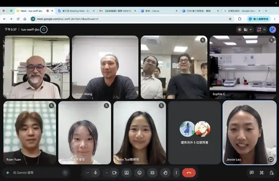
Professor Huang Chieh-Chen online, on when and how much protectant to deliver. -
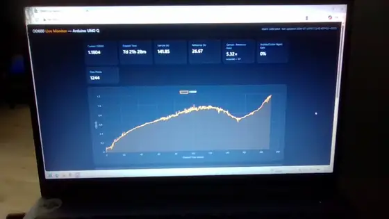
The reactor, live on a monitor.
August 2026
pH and dissolved-oxygen sensors joined the loop, the photometer was calibrated into agreement with a real instrument, and the whole rig moved into an old computer case. We also came back from NCHU with WB800, the strain the rest of the year ran on.
-
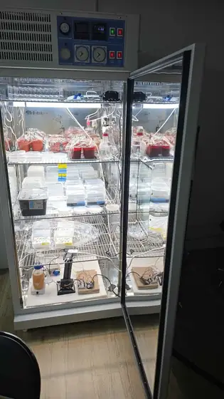
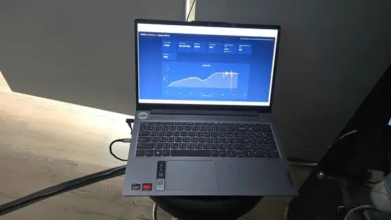
Reactor, photometer and plants in one incubator overnight, logged by our own instrument. -
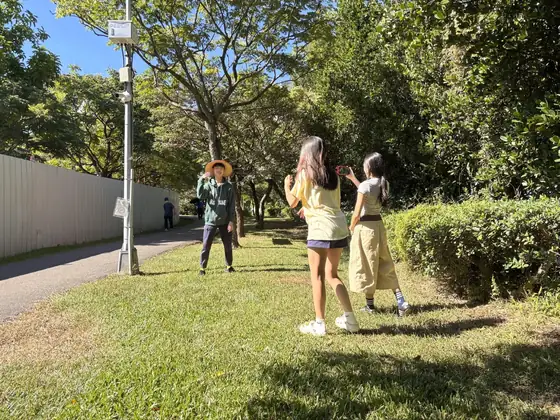
Filming the promotional video in the park. -
First tests of the pH and dissolved-oxygen sensors. -
NCHU, to pitch to Professor Huang Chieh-Chen and Professor Huang Tzu-Pi. We left with a plate of B. subtilis WB800. -
Behind the scenes of the video, with the reactor fully set up. -
YesHealth iFarm, a hydroponic farm run entirely on controlled conditions. -
Pressure-testing the reactor. -
Our first high school event. -
The four stages of the model on one sheet: sensing, production, membrane, soil, with predicted biomass against stress. -
Calibrating the photometer against the Biodrop, and moving the whole rig into an empty computer case. -
Back at Professor Cheng’s lab with two questions about agar and aeration. -
The last week before the public forum: a new hydroponics box with a printed floating seed rack, a compact reactor, the map, and rehearsals.
September 2026
We ran our own public forum at the Taipei Water Garden market and put the project in front of farmers and strangers. In the lab a 10 kb plasmid finally went into WB800, and the light plate ran its first assay.
-
Professor Chang Jo-Shu’s second visit, this time on what was going wrong. -
Our public forum: the talk, the booth, the data physicalization table, and everyone who turned up. -
Smart Agriweek, where it became clear that young farmers were our first adopters. -
The NCHU symposium, and a reminder to understand our own data better. -
Dr. Sattely and Professor Endy on how we explain our controls and our mechanism. -
Farmer Chen Ke-Wei online, telling us our price was one a farmer could live with. -
A 10 kb level 2 plasmid electroporated into WB800 at last, which opened the way to the light plate. -
The first light-control assay on the light plate apparatus.
October 2026
We read the last assays, saw the last two stakeholders, then moved into GEMS for wiki freeze week and did not really leave.
-
Our first mock judging, the whole team in groups. -
A double photometer calibration against SiO₂, and the air and leaf sensors taken out to the lift lobby where nothing stays steady. -
Director Wu Tsz-Hsien at the Miaoli station on reaching farmers, and Lu An-Bang of Agriweather on microclimate data. -
The last night of lab work: sampling the reactor, and the dashboard still logging. -
The last stretch. Everyone at GEMS from morning until past midnight, writing on tables, sofas and the floor, kept going by other people’s parents.